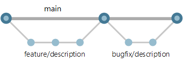
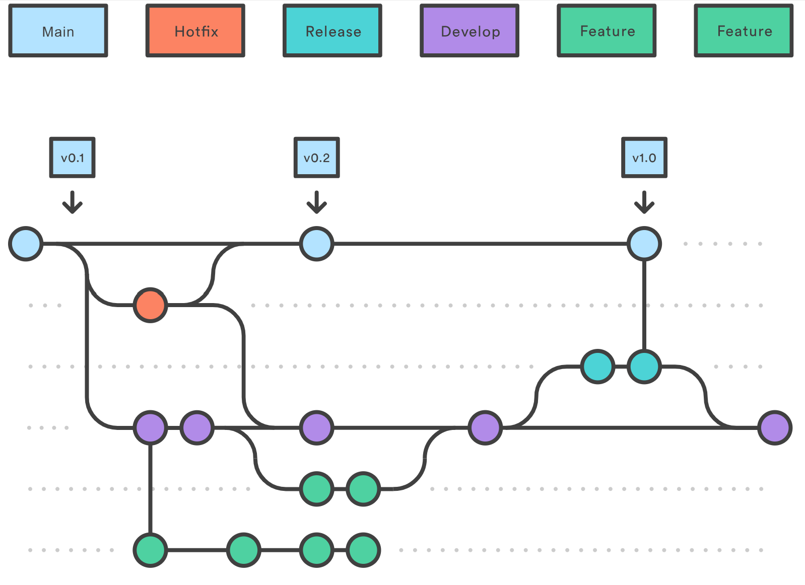
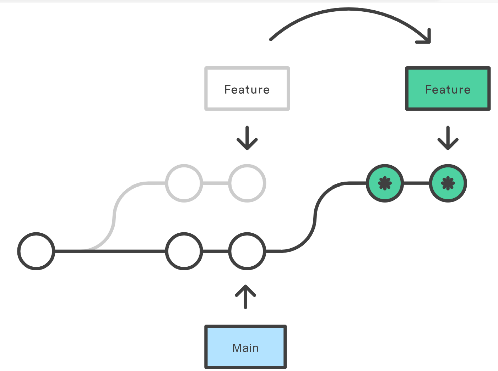

Git and Pre-Commit Hooks¶
Git - The Basics¶
Is is a tool we all know and love.
There are a few basic concepts that would be good to master.
Development Lifecycle¶
The concept of Continuous Integration means that code is continually developed and merged into a branch, for testing or deployment.
CI/CD:
- CI: merge frequently into master.
- Minimise merge issues from multiple collaborators.
- CD: deploy master frequently to production.
- Regular updates for new features and bug fixes.
The primary branches, in order:
- Development: the branch that fixes or features are continually merged.
- Staging: where development branch fixes/features are grouped and tested together, with the intention to push to production once QA/QC passes.
- Production: where staging is stabilised and released at intervals as actual versions of your tool/software.
Additional supporting branches:
- Fix: fixes a bug or issue.
- Feature: add a new feature that didn't exist before.
- Hotfix: if an issue is found after a production release is made, a hotfix can be used to patch the production code.
Git Flow¶
Git flow is a branching model.
The most basic version of this would be:
feature or fix --> main (production)

Adding in the extra steps of the described development lifecycle, we get:
feature or fix --> development --> staging --> main (production)

The number of additional stages can be flexible depending on requirements.
Forking¶
To work on an open-source repository, generally you may not have direct access to the repo from the start.
A common pattern is to make your own copy of the repo, a 'fork' of it to work on.
Within this repo you create a new branch:
git checkout -b feat/some-new-feature
Then when you push the branch to your fork, generally a code hosting platform like Github/Gitlab will prompt you to create a Pull Request or Merge Request (the same thing).
Pull Requests¶
A pull requests (PR) is used to merge the code from your forked repository into the original code repository.
You should describe as accurately as possible what solution your code provides, or feature it adds, and why it is necessary.
Ideally try to link it to an existing Issue in the repository issue board.
The maintainer of the repo will review your code, comment, and merge it in.
Rebasing¶
This is often a scary concept to many.
It essentially re-writes the Git history on a branch, so use with care.
Use case: sometimes your code gets out of sync with the target branch you originally branched from.
For example you branched from develop to a branch feat/some-new-thing.
If you wish to pull in the latest updates from the develop branch into
your feature branch, you can do a rebase:
git checkout develop
git pull
git checkout feat/some-new-thing
git rebase develop
This will insert the updates below your code edits. I.e. the history
will show your commits on top of the most recent develop commits.
Visually this will be:

Merge vs Rebase¶
- Use merge for feature → main (work finished).
- When on develop use merge to include a (idealy finished) feature
- Use rebase for develop → feature (work in progress).
- When on the feature branch use rebase from develop to include the latest changes
- Regularly rebasing feature branches will keep them up to date with current features (either from main or develop).
- This means that conflicts can be resolved gradually, instead of in one go during a merge.
The most important take away: rebase is a powerful tool, but be wary using it if you are collaborating with someone on the same feature branch.
If a teammate happens to rebase a branch that you are working on, the easiest solution is to stash and reset to get the rebased edits:
git stash -u
git fetch origin feat/new-thing
git reset --hard feat/new-thing
git stash apply
git stash drop
Anticipating a Merge¶
- Often in a developers workflow, they create on PR, then while waiting for review work on another PR.
- If
PR-2relies on work fromPR-1to be merged, this can be an issue. - One approach to solving this dilemma is informally called 'anticipating a merge'.
Anticipating a Merge Workflow¶
-
Complete work on branch
PR-1and push to create a PR. -
Ensure you are on branch
PR-1:git checkout pr-1 -
Create branch
PR-2based offPR-1:git checkout -b pr-2 -
Build your feature on top of the code in
PR-1. - Complete work on branch
PR-2and push to create a PR.
Important Notes:
- The new
PR-2will initially include the commits fromPR-1. - However, the commits shown in the PR changelog will disappear once
PR-1is merged into the target branch (e.g.development). - You should mention in the
PR-2description that this PR 'relies on PR-1 being accepted and merged'.
Updating PR-1 While PR-2 Is In Progress¶
- You may encounter a situation where the review of
PR-1takes some time. - If
PR-2makes progress, but the reviewer says thatPR-1requires updates. - In this case you have two options:
- Merge
PR-1and add the required updates toPR-2. - Update
PR-1and merge, then rebasePR-2against the target branch.
- Merge